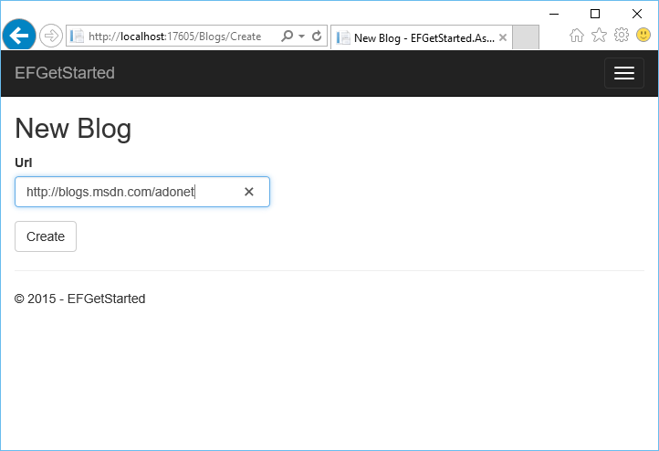
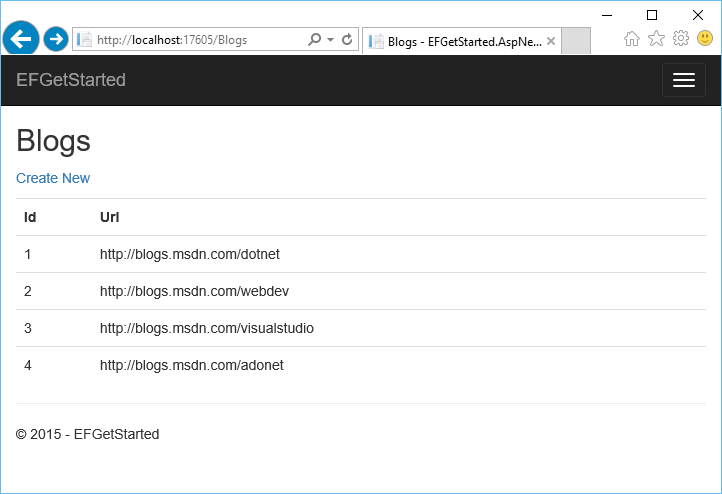

Внимание
Эта документация для EF Core. Для EF6.x и более ранних версий смотрите http://msdn.com/data/ef.
Приложение ASP.NET Core для существующей базы данных (Database First)¶
В этом руководстве вы будете создавать MVC приложение ASP.NET Core, которое выполняет простой доступ к данным при помощи Entity Framework. Для создания модели Entity Framework вы будете использовать обратное проектирование на основе существующей базы данных.
В этой статье:
Совет
Вы можете посмотреть пример для этой статьи на GitHub.
Необходимые условия¶
Для продолжения необходимы следующие условия:
- Visual Studio 2015 Update 2
- .NET Core для Visual Studio
- База данных Blogging
База данных Blogging¶
Этот учебник в качестве текущей использует базу данных Blogging вашего экземпляра LocalDb.
Примечание
Если вы уже создали базу данных Blogging как часть другого учебного пособия, то можете пропустить этот шаг.
- Откройте Visual Studio
- Выберите Microsoft SQL Server и нажмите Продолжить
- Введите (localdb)\mssqllocaldb в качестве Имя сервера
- Введите master в качестве Имя базы данных и нажмите OK
- База данных master теперь показывается в разделе Data Connections в Server Explorer
- Щелкните правой кнопкой мыши на Server Explorer и выберите New Query
- Скопируйте скрипт показанный ниже в редактор запросов
- Щелкните правой кнопкой мыши на редакторе и выберите Execute
1 2 3 4 5 6 7 8 9 10 11 12 13 14 15 16 17 18 19 20 21 22 23 24 25 26 27 28 | CREATE DATABASE [Blogging]
GO
USE [Blogging]
GO
CREATE TABLE [Blog] (
[BlogId] int NOT NULL IDENTITY,
[Url] nvarchar(max) NOT NULL,
CONSTRAINT [PK_Blog] PRIMARY KEY ([BlogId])
);
GO
CREATE TABLE [Post] (
[PostId] int NOT NULL IDENTITY,
[BlogId] int NOT NULL,
[Content] nvarchar(max),
[Title] nvarchar(max),
CONSTRAINT [PK_Post] PRIMARY KEY ([PostId]),
CONSTRAINT [FK_Post_Blog_BlogId] FOREIGN KEY ([BlogId]) REFERENCES [Blog] ([BlogId]) ON DELETE CASCADE
);
GO
INSERT INTO [Blog] (Url) VALUES
('http://blogs.msdn.com/dotnet'),
('http://blogs.msdn.com/webdev'),
('http://blogs.msdn.com/visualstudio')
GO
|
Создание нового проекта¶
- Откройте Visual Studio 2015
- В левом столбце выберите:
- Выберите шаблон проекта Веб приложение ASP.NET Core (.NET Core)
- Введите в качестве имени EFGetStarted.AspNetCore.ExistingDb и нажмите OK
- Подождите, пока не появится диалог Новое веб-приложение ASP.NET Core
- Убедитесь, что Проверка подлинности установлена в “без проверки подлинности”
- Нажмите OK
Установка Entity Framework¶
Чтобы использовать EF Core, установите пакет провайдера базы данных, для которой вы хотите настроить таргетинг. Это пошаговое руководство использует SQL Server. Список доступных провайдеров Провайдеры баз данных.
- Run
Install-Package Microsoft.EntityFrameworkCore.SqlServer
Примечание
В проекте ASP.NET Core команда Install-Package выполняется очень быстро, а установка пакета происходит в теневом режиме. Когда установка завершится, вы увидите надпись (Restoring...) в разделе References в Solution Explorer.
Чтобы включить обратный инжиниринг из существующей базы данных нам так же нужно установить несколько других пакетов.
- Выполните команду
Install-Package Microsoft.EntityFrameworkCore.Tools –Pre- Выполните команду
Install-Package Microsoft.EntityFrameworkCore.SqlServer.Design- Откройте файл project.json
- Перейдите в раздел
toolsи добавьте выделенные строки, как показано ниже
Обратный инжиниринг вашей модели¶
Теперь пришло время для создания модели EF, основываясь на существующей базе данных.
- Для того, чтобы создать модель из текущей базы данных, выполните следующую команду
Scaffold-DbContext "Server=(localdb)\mssqllocaldb;Database=Blogging;Trusted_Connection=True;" Microsoft.EntityFrameworkCore.SqlServer
Процесс обратного инжиниринга создал классы сущностей и производный контекст, основанный на схеме существующей базы данных. Классы сущностей - это простые объекты C #, которые представляют данные, которые вы собираетесь запрашивать и сохранять.
1 2 3 4 5 6 7 8 9 10 11 12 13 14 15 16 17 18 | using System;
using System.Collections.Generic;
namespace EFGetStarted.AspNetCore.ExistingDb.Models
{
public partial class Blog
{
public Blog()
{
Post = new HashSet<Post>();
}
public int BlogId { get; set; }
public string Url { get; set; }
public virtual ICollection<Post> Post { get; set; }
}
}
|
Контекст представляет собой сеанс связи с базой данных и позволяет запрашивать и сохранять экземпляры классов сущностей.
1 2 3 4 5 6 7 8 9 10 11 12 13 14 15 16 17 18 19 20 21 22 23 24 25 26 27 28 29 30 31 32 | using Microsoft.EntityFrameworkCore;
using Microsoft.EntityFrameworkCore.Metadata;
namespace EFGetStarted.AspNetCore.ExistingDb.Models
{
public partial class BloggingContext : DbContext
{
protected override void OnConfiguring(DbContextOptionsBuilder optionsBuilder)
{
#warning Для защиты потенциально конфиденциальной информации в строке подключения, вы должны переместить его из исходного кода. Руководство по хранению строк подключения смотрите http://go.microsoft.com/fwlink/?LinkId=723263.
optionsBuilder.UseSqlServer(@"Server=(localdb)\mssqllocaldb;Database=Blogging;Trusted_Connection=True;");
}
protected override void OnModelCreating(ModelBuilder modelBuilder)
{
modelBuilder.Entity<Blog>(entity =>
{
entity.Property(e => e.Url).IsRequired();
});
modelBuilder.Entity<Post>(entity =>
{
entity.HasOne(d => d.Blog)
.WithMany(p => p.Post)
.HasForeignKey(d => d.BlogId);
});
}
public virtual DbSet<Blog> Blog { get; set; }
public virtual DbSet<Post> Post { get; set; }
}
}
|
Регистрация контекста при помощи внедрения зависимостей¶
Концепция внедрения зависимостей является центральной в ASP.NET Core. Сервисы (такие как BloggingContext) регистрируются при запуске приложения при помощи механизма внедрения зависимостей. Компоненты, необходимые этим сервисам (такие как MVC контроллеры) предоставляются им через параметры конструктора или через свойства. Более подробную информацию о внедрении зависимостей смотрите в статье Dependency Injection на сайте ASP.NET.
Удаление встроенной конфигурации контекста¶
В ASP.NET Core, конфигурация в основном выполняется в Startup.cs. Что бы соответствовать этому шаблону, мы перенесем конфигурацию провайдера базы данных в Startup.cs.
- Откройте файл Models\BloggingContext.cs
- Удалите строки кода выделеные ниже
1 2 3 4 5 6 7 | public partial class BloggingContext : DbContext
{
protected override void OnConfiguring(DbContextOptionsBuilder optionsBuilder)
{
#warning Для защиты потенциально конфиденциальной информации в строке подключения, вы должны переместить его из исходного кода. Руководство по хранению строк подключения смотрите http://go.microsoft.com/fwlink/?LinkId=723263.
optionsBuilder.UseSqlServer(@"Server=(localdb)\mssqllocaldb;Database=Blogging;Trusted_Connection=True;");
}
|
- Добавьте строки кода, выделеные ниже
1 2 3 4 5 | public partial class BloggingContext : DbContext
{
public BloggingContext(DbContextOptions<BloggingContext> options)
: base(options)
{ }
|
Регистрация и конфигурация вашего контекста в Startup.cs¶
Для того, чтобы наши MVC контроллеры начали использовать BloggingContext, мы должны зарегистрировать их как сервисы.
- Откройте файл Startup.cs
- В начало файла добавьте следующие операторы
using
1 2 | using EFGetStarted.AspNetCore.ExistingDb.Models;
using Microsoft.EntityFrameworkCore;
|
Теперь мы можем использовать метод AddDbContext для регистрации его как сервиса.
- Найдите метод
ConfigureServices- Добавьте строки, которые выделены в следующем коде
1 2 3 4 | public void ConfigureServices(IServiceCollection services)
{
var connection = @"Server=(localdb)\mssqllocaldb;Database=Blogging;Trusted_Connection=True;";
services.AddDbContext<BloggingContext>(options => options.UseSqlServer(connection));
|
Создание контроллера¶
Далее, мы добавим MVC контроллер, который будет использовать EF для запроса и сохранения данных.
- Щелкните правой кнопкой мыши на папке Controllers в Solution Explorer и выберите:
- В левом столбце выберите:
- Выберите шаблон элемента Class
- Назовите файл BlogsController.cs и нажмите OK
- Замените содержимое файла следующим кодом
1 2 3 4 5 6 7 8 9 10 11 12 13 14 15 16 17 18 19 20 21 22 23 24 25 26 27 28 29 30 31 32 33 34 35 36 37 38 39 40 41 | using EFGetStarted.AspNetCore.ExistingDb.Models;
using Microsoft.AspNetCore.Mvc;
using System.Linq;
namespace EFGetStarted.AspNetCore.ExistingDb.Controllers
{
public class BlogsController : Controller
{
private BloggingContext _context;
public BlogsController(BloggingContext context)
{
_context = context;
}
public IActionResult Index()
{
return View(_context.Blog.ToList());
}
public IActionResult Create()
{
return View();
}
[HttpPost]
[ValidateAntiForgeryToken]
public IActionResult Create(Blog blog)
{
if (ModelState.IsValid)
{
_context.Blog.Add(blog);
_context.SaveChanges();
return RedirectToAction("Index");
}
return View(blog);
}
}
}
|
Вы заметите, что контроллер принимает значение BloggingContext в качестве параметра конструктора. Механизм внедрения зависимостей ASP.NET позаботится о передачи экземпляра BloggingContext в ваш контроллер.
В контроллере есть действие Index, которое отображает все блоги в базе данных, а действие Create записывает в базу данных новый блог.
Создание видов¶
Теперь, когда у нас есть контроллер настало время добавить виды, которые определяют пользовательский интерфейс.
Мы начнем с вида для нашего действия Index, которое показывает все блоги.
- Щелкните правой кнопкой мыши на папке Views в Solution Explorer и выберите:
- Назовите папку Blogs
- Щелкните правой кнопкой мыши на папке Blogs и выберите:
- В левом столбце выберите:
- Выберите шаблон элемента MVC View Page
- Назовите файл Index.cshtml и нажмите Добавить
- Замените содержимое файла следующим кодом
1 2 3 4 5 6 7 8 9 10 11 12 13 14 15 16 17 18 19 20 21 22 23 24 25 26 27 28 29 30 | @model IEnumerable<EFGetStarted.AspNetCore.ExistingDb.Models.Blog>
@{
ViewBag.Title = "Blogs";
}
<h2>Blogs</h2>
<p>
<a asp-controller="Blogs" asp-action="Create">Create New</a>
</p>
<table class="table">
<tr>
<th>Id</th>
<th>Url</th>
</tr>
@foreach (var item in Model)
{
<tr>
<td>
@Html.DisplayFor(modelItem => item.BlogId)
</td>
<td>
@Html.DisplayFor(modelItem => item.Url)
</td>
</tr>
}
</table>
|
Мы так же добавим вид для действия Create, которое позволяет пользователю ввести данные для нового блога.
- Щелкните правой кнопкой мыши на папке Blogs и выберите:
- В левом столбце выберите:
- Выберите шаблон элемента MVC View Page
- Назовите файл Create.cshtml и нажмите Добавить
- Замените содержимое файла следующим кодом
1 2 3 4 5 6 7 8 9 10 11 12 13 14 15 16 17 18 19 20 21 22 23 24 25 | @model EFGetStarted.AspNetCore.ExistingDb.Models.Blog
@{
ViewBag.Title = "New Blog";
}
<h2>@ViewData["Title"]</h2>
<form asp-controller="Blogs" asp-action="Create" method="post" class="form-horizontal" role="form">
<div class="form-horizontal">
<div asp-validation-summary="All" class="text-danger"></div>
<div class="form-group">
<label asp-for="Url" class="col-md-2 control-label"></label>
<div class="col-md-10">
<input asp-for="Url" class="form-control" />
<span asp-validation-for="Url" class="text-danger"></span>
</div>
</div>
<div class="form-group">
<div class="col-md-offset-2 col-md-10">
<input type="submit" value="Create" class="btn btn-default" />
</div>
</div>
</div>
</form>
|
Запуск приложения¶
Теперь вы можете запустить приложение, чтобы увидеть его в действии.
 
- Приложение будет построено и открыто в веб-браузере
- Перейдите в /Blogs
- Нажмите Create New
- Введите Url для нового блога и нажмите Create